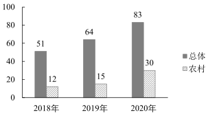

第 1 题 #
1.A. difficultB. normalC. steadyD. pleasant
考研英语 · questions · 2022
题号和章节目录由结构化数据生成。选项按卷面字母顺序显示；原标记保留在 JSON 中。
2022 年全国硕士研究生招生考试英语（二）
Read the following text. Choose the best word(s) for each numbered blank and mark A, B, C or D on the ANSWER SHEET. (10 points)
Harlan Coben believes that if you’re a writer, you’ll find the time; and that if you can’t find the time, then writing isn’t a priority and you’re not a writer. For him, writing is a 1 job — a job like any other. He has 2 it with plumbing, pointing out that a plumber doesn’t wake up and say that he can’t work with pipes today.
3 , like most writers these days, you’re holding down a job to pay the bills, it’s not 4 to find the time to write. But it’s not impossible. It requires determination and single-mindedness. 5 that most bestselling authors began writing when they were doing other things to earn a living. And today, even writers who are fairly 6 often have to do other work to 7 their writing income.
As Harlan Coben has suggested, it’s a 8 of priorities. To make writing a priority, you’ll have to 9 Some of your day-to-day activities and some things you really enjoy. Depending on your 10 and your lifestyle, that might mean spending less time watching television or listening to music, though some people can write 11 they listen to music. You might have to 12 the amount of exercise or sport you do. You’ll have to make social media an 13 activity rather than a daily, time-consuming 14 . There’ll probably have to be less socialising with your friends and less time with your family. It’s a 15 learning curve and it won’t always make you popular.
There’s just one thing you should try to keep at least some time for, 16 your writing — and that’s reading. Any writer needs to read as much and as widely as they can; it’s the one 17 supporter — Something you can’t do without.
Time is finite. The older you get, the 18 it seems to go. We need to use it as carefully and as 19 as we can. That means prioritising out activities so that we spend most time on the things we really want to do. If you are a writer, that means — 20 — writing.
Read the following four texts. Answer the questions after each text by choosing A, B, C or D. Mark your answers on the ANSWER SHEET. (40 points)
On a recent sunny day, 13,000 chickens roam over Larry Brown’s 40 windswept acres in Shiner, Texas. Some rest in the shade of a parked car. Others drink water with the cows. This all seems random, but it’s by design, part of what the $6.1 billion U.S. egg industry bets will be its next big thing: climate-friendly eggs.
These eggs, which are making their debut now on shelves for as much as $8 a dozen, are still labeled organic and animal-friendly, but they’re also from birds that live on farms using regenerative agriculture — special techniques to cultivate rich soils that can trap greenhouse gases. Such eggs could be marketed as helping to fight climate change.
“I’m excited about our progress,” says Brown, who harvests eggs for Denver-based NestFresh Eggs and is adding more cover crops that draw worms and crickets for the chickens to eat. The birds’ waste then fertilizes fields. Such improvements “allow our hens to forage for higher-quality natural feed that will be good for the land, the hens, and the eggs that we supply to our customers.”
The egg industry’s push is the first major test of whether animal products from regenerative farms can become the next premium offering. In barely more than a decade, organic eggs went from being dismissed as a niche product in natural foods stores to being sold at Walmart. More recently there were similar doubts about probiotics and plant-based meats, but both have exploded into major supermarket categories. If the sustainable-egg rollout is successful, it could open the floodgates for regenerative beef, broccoli, and beyond.
Regenerative products could be a hard sell, because the concept is tough to define quickly, says Julie Stanton, associate professor of agricultural economics at Pennsylvania State University Brandywine. Such farming also brings minimal, if any, improvement to the food products (though some producers say their eggs have more protein).
The industry is betting that the same consumers paying more for premium attributes such as free-range, non-GMO, and pasture-raised eggs will embrace sustainability. Surveys show that younger generations are more concerned about climate change, and some of the success of plant-based meat can be chalked up to shoppers wanting to signal their desire to protect the environment. Young adults “really care about the planet,” says John Brunnquell, president of Egg Innovations. “They are absolutely altering the food chain beyond what I think even if they understand what they’re doing.”
21. The climate-friendly eggs are produced ____
22. Larry Brown is excited about his progress in ____
23. The example of organic eggs is used in the paragraph 4 to suggest ____
24. It can be learned from the paragraph 6 that young people ____
25. John Brunnquell would disagree with Julie Stanton over regenerative products’ ____
More Americans are opting to work well into retirement, a growing trend that threatens to upend the old workforce model.
One in three Americans who are at least 40 have or plan to have a job in retirement to prepare for a longer life, according to a survey conducted by Harris Poll for TD Ameritrade. Even more surprising is that more than half of “unretirees” — those who plan to work in retirement or went back to work after retiring — said they would be employed in their later years even if they had enough money to settle down, the survey showed.
Financial needs aren’t the only culprit for the “unretirement” trend. Other reasons, according to the study, include personal fulfillment such as staying mentally fit, preventing boredom or avoiding depression. About 72% of “unretire” respondents said that they would return to work once retired to keep mentally fit while 59% said it would be tied to making ends meet.
“The concept of retirement is evolving,” said Christine Russell, senior manager of retirement at TD Ameritrade. “It’s not just about finances. The value of work is also driving folks to continue working past retirement.”
One reason for the change in retirement patterns: Americans are living longer. The share of the population 65 and older was 16% in 2018, up 3.2% from the prior year, according to the U.S. Census Bureau. That’s also up 30.2% since 2010. Older Americans are also the fastest-growing segment of the U.S. workforce, and boomers are expected to live longer than previous generations. The percentage of retirement-age people in the labor force has doubled over the past three decades. About 20% of people 65 and older were in the workforce in February, up from an all-time low of 10% in January 1985, according to money manager United Income.
Because of longer life spans, Americans are also boosting their savings to preserve their nest eggs, the TD Ameritrade study showed, which surveyed 2,000 adults between 40 to 79. Six in 10 “unretirees” are increasing their savings in anticipation of a longer life, according to the survey. Among the most popular ways they are doing this, the company said, is by reducing their overall expenses, securing life insurance or maximizing their contributions to retirement accounts. Seniors are living longer, but planning for the extended years is key.
Unfortunately, many people who are opting to work in retirement are preparing to do so because they are worried about making ends meet in their later years, said Brent Weiss, a co-founder at Baltimore-based financial-planning firm Facet Wealth. He suggested that preretirees should speak with a financial adviser to set long-term financial goals.
“The most challenging moments in life are getting married, starting a family and ultimately retiring,” Weiss said. “It’s not just a financial decision, but an emotional one. Many people believe they can’t retire.”
26. The survey conducted by Harris Poll indicates that ____
27. It can be inferred from Paragraph 3 that Americans tend to think that ____
28. Retirement patterns are changing partly due to ____
29. Many “unretirees” are increasing their savings by ____
30. With regard to retirement, Brent Weiss thinks that many people are ____
We have all encountered them, in both our personal and professional lives. Think about the times you felt tricked or frustrated by a membership or subscription that had a seamless signup process but was later difficult to cancel. Something that should be simple and transparent can be complicated, intentionally or unintentionally, in ways that impair consumer choice. These are examples of dark patterns.
First coined in 2010 by user experience expert Harry Brignull, “dark patterns” is a catch-all term for practices that manipulate user interfaces to influence the decision-making ability of users. Brignull identifies 12 types of common dark patterns, ranging from misdirection and hidden costs to “roach motel,” where a user experience seems easy and intuitive at the start, but turns difficult when the user tries to get out.
In a 2019 study of 53,000 product pages and 11,000 websites, researchers found that about one in 10 employs these design practices. Though widely prevalent, the concept of dark patterns is still not well understood. Business and nonprofit leaders should be aware of dark patterns and try to avoid the gray areas they engender.
Where is the line between ethical, persuasive design and dark patterns? Businesses should engage in conversations with IT, compliance, risk, and legal teams to review their privacy policy, and include in the discussion the customer/user experience designers and coders responsible for the company’s user interface, as well as the marketers and advertisers responsible for sign-ups, checkout baskets, pricing, and promotions. Any or all these teams can play a role in creating or avoiding “digital deception.”
Lawmakers and regulators are slowly starting to address the ambiguity around dark patterns, most recently at the state level. In March, the California Attorney General announced the approval of additional regulations under the California Consumer Privacy Act (CCPA) that “ensure that consumers will not be confused or misled when seeking to exercise their data privacy rights.” The regulations aim to ban dark patterns — this means prohibiting companies from using “confusing language or unnecessary steps such as forcing them to click through multiple screens or listen to reasons why they shouldn’t opt out.”
As more states consider promulgating additional regulations, there is a need for greater accountability from within the business community. Dark patterns also can be addressed on a self-regulatory basis, but only if organizations hold themselves accountable, not just to legal requirements but also to industry best practices and standards.
31. It can be learned from the first two paragraphs that dark patterns ____
32. The 2019 study on dark patterns is mentioned to show ____
33. To handle digital deception, businesses should ____
34. The additional regulations under the CCPA are intended to ____
35. According to the last paragraph, a key to coping with dark patterns is ____
Although ethics classes are common around the world, scientists are unsure if their lessons can actually change behavior; evidence either way is weak, relying on contrived laboratory tests or sometimes unreliable self-reports. But a new study published in Cognition found that, in at least one real-world situation, a single ethics lesson may have had lasting effects.
The researchers investigated one class session’s impact on eating meat. They chose this particular behavior for three reasons, according to study co-author Eric Schwitzgebel, a philosopher at the University of California, Riverside: students’ attitudes on the topic are variable and unstable, behavior is easily measurable, and ethics literature largely agrees that eating less meat is good because it reduces environmental harm and animal suffering. Half of the students in four large philosophy classes read an article on the ethics of factory-farmed meat, optionally watched an 11-minute video on the topic and joined a 50-minute discussion. The other half focused on charitable giving instead. Then, unknown to the students, the researchers studied their anonymized meal-card purchases for that semester — nearly 14,000 receipts for almost 500 students. “It’s an awesome data set,” says Nina Strohminger, a psychologist who teaches business ethics at the University of Pennsylvania and was not involved in the study.
Schwitzgebel predicted the intervention would have no effect; he had previously found that ethics professors do not differ from other professors on a range of behaviors, including voting rates, blood donation and returning library books. But among student subjects who discussed meat ethics, meal purchases containing meat decreased from 52 to 45 percent — and this effect held steady for the study’s duration of several weeks. Purchases from the other group remained at 52 percent.
“That’s actually a pretty large effect for a pretty small intervention,” Schwitzgebel says. Psychologist Nina Strohminger at the University of Pennsylvania, who was not involved in the study, says she wants the effect to be real but cannot rule out some unknown confounding variable. And if real, she notes, it might be reversible by another nudge: “Easy come, easy go.”
Schwitzgebel suspects the greatest impact came from social influence — classmates or teaching assistants leading the discussions may have shared their own vegetarianism, showing it as achievable or more common. Second, the video may have had an emotional impact. Least rousing, he thinks, was rational argument, although his co-authors say reason might play a bigger role. Now the researchers are probing the specific effects of teaching style, teaching assistants’ eating habits and students’ video exposure. Meanwhile Schwitzgebel — who had predicted no effect — will be eating his words.
36. Scientists generally believe that the effects of ethics classes are ____
37. Which of the following is a reason for the researchers to study meat eating?
38. Eric Schwitzgebel’s previous findings suggest that ethics professors ____
39. Nina Strohminger thinks that the effect of the intervention is ____
40. Eric Schwitzgebel suspects that the students’ change in behavior ____
Read the following text and answer the questions by choosing the most suitable subheading from the list A-G for each numbered paragraphs (41-45). There are two extra subheadings which you do not need to use. Mark your answers on the ANSWER SHEET. (10 points)
Getting back into exercise can be a challenge in the best of times, but with gyms and in person exercise classes off-limits to many people these days because of COVID-19 concerns, it can be tricky to know where to start. And it’s important to get the right dose of activity. “Too much too soon either results in injury or burnout,” says Mary Yoke, PhD, a faculty member in the kinesiology department at Indiana University in Bloomington. The following simple strategies will help you return to exercise safely after a break.
41. _________________________
Don’t try to go back to what you were doing before your break. If you were walking 3 miles a day, playing 18 holes of golf three times a week, or lifting 10-pound dumbbells for three sets of 10 reps, reduce activity to half a mile every other day, or nine holes of golf once a week with short walks on other days, or use 5-pound dumbbells for one set of 10 reps. Increase time, distance, and intensity gradually. “This isn’t something you can do overnight,” Denay says. But you’ll reap benefits such as less anxiety and improved sleep right away.
42. _________________________
If you’re breathing too hard to talk in complete sentences, back off. If you feel good, go a little longer or faster. Feeling wiped out after a session? Go easier next time. And stay alert to serious symptoms, such as chest pain or pressure, severe shortness of breath or dizziness, or faintness, and seek medical attention immediately.
43. _________________________
Consistency is the key to getting stronger and building endurance and stamina. Ten minutes of activity per day is a good start, says Marcus Jackovitz, DPT, a physical therapist at the University of Miami Hospital. All the experts we spoke with highly recommend walking because it’s the easiest, most accessible form of exercise. Although it can be a workout on its own, if your goal is to get back to Zumba classes, tennis, cycling, or any other activity, walking is also a great first step.
44. _________________________
Even if you can’t yet do a favorite activity, you can practice the moves. With or without a club or racket, swing like you’re hitting the ball. Paddle like you’re in a kayak or canoe. Mimic your favorite swimming strokes. The action will remind you of the joy the activity brought you and prime your muscles for when you can get out there again.
45. _________________________
Exercising with others “can keep you accountable and make it more fun, so you’re more likely to do it again,” Jackovitz says. You can do activities such as golf and tennis or take a walk with others and still be socially distant. But when you can’t connect in person, consider using technology. Chat on the phone with a friend while you walk around your neighborhood. FaceTime or Zoom with a relative as you strength train or stretch at home. You can also join a livestream or on-demand exercise class.
46. Directions:
Translate the following text into Chinese. Write your translation on the ANSWER SHEET. (15 points)
Although we try our best, sometimes our paintings rarely turn out as originally planned. Changes in the light, the limitations of your painting materials, and the lack of experience and technique mean that what you start out trying to achieve may not come to life the way that you expected.
Although this can be frustrating and disappointing, it turns out that this can actually be good for you. Unexpected results have two benefits: you pretty quickly learn to deal with disappointment and realise that when one door closes, another opens. You also quickly learn to adapt and come up with creative solutions to the problems the painting presents, and thinking outside the box will become your Second nature. In fact, creative problem-solving skills are incredibly useful in daily life, with which you’re more likely to be able to find a solution when problem arises.
此题暂无可用答案。
47. Directions:
Suppose you are planning a campus food festival. Write an email to the international students in your university to
1) introduce the food festival, and
2) invite them to participate.
You should write about 100 words on the ANSWER SHEET.
Do not use your own name. Use “Li Ming” instead. (10 points)
此题暂无可用答案。
48. Directions:
Write an essay based on the chart below. In your writing, you should
1) interpret the chart, and
2) give your comments.
You should write about 150 words on the ANSWER SHEET. (15 points)

此题暂无可用答案。